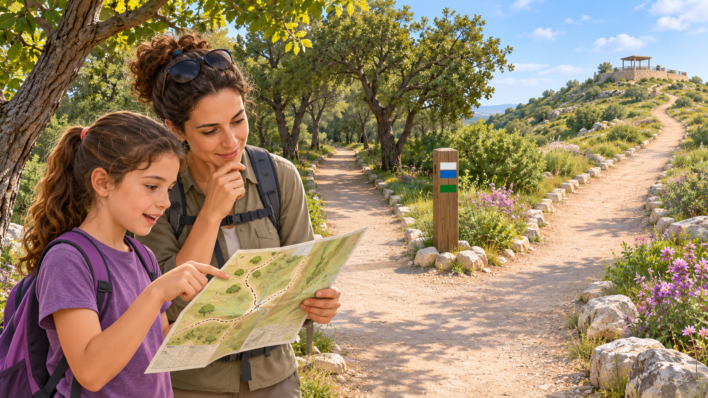
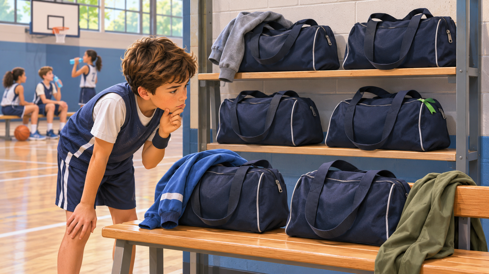
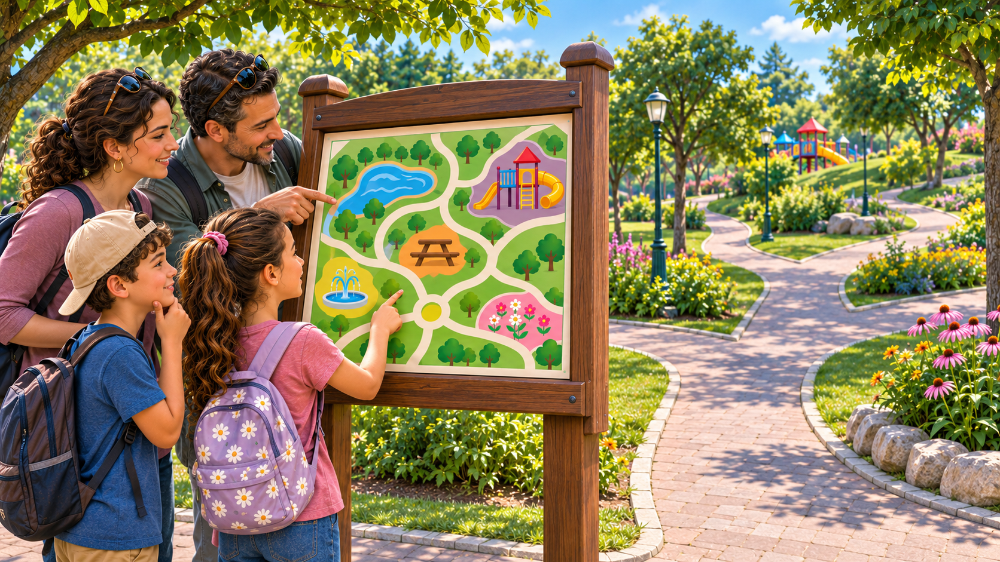

تحديد الطريق والموقع
كيف نعرف أين نحن ونعثر على ما نبحث عنه ونصل إلى المكان الذي نريده؟
تأمّلوا الموضوعات الثلاثة واقرؤوا الأوصاف واختاروا معًا ما تريدون البحث فيه.

تحديد الطريق في رحلة
إلى أين نتابع من هنا؟
تصل ميا وعائلتها إلى مفترق في الطريق إلى المطلّ. لديهم خريطة، لكن كيف يربطون بينها وبين المكان الذي يقفون فيه؟
لقراءة القصّة ←
العثور على الأغراض
أيّ حقيبة هي حقيبتنا؟
يعود أوري إلى المقعد في استراحة الشرب، فيجد حقائب متشابهة. كيف سيميّز حقيبته من دون فتح حقائب الأطفال الآخرين؟
لقراءة القصّة ←
التنقّل في مكان كبير
كيف نصل إلى منطقة النزهة؟
تريد ليا وعائلتها الوصول إلى منطقة النزهة في متنزّه كبير. تظهر المنطقة على الخريطة، لكنّها لا تُرى من المدخل. أيّ طريق سيسلكون؟
لقراءة القصّة ←